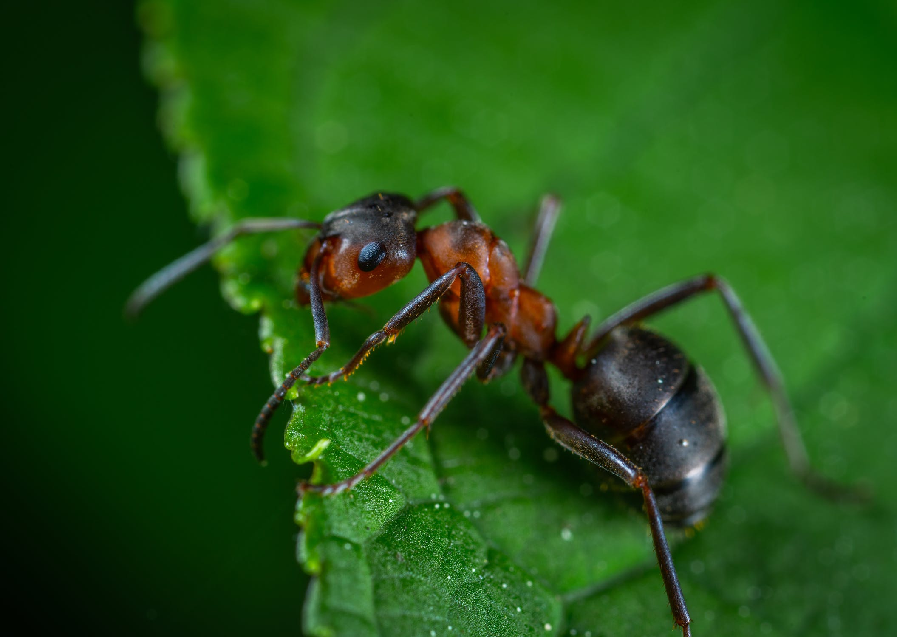
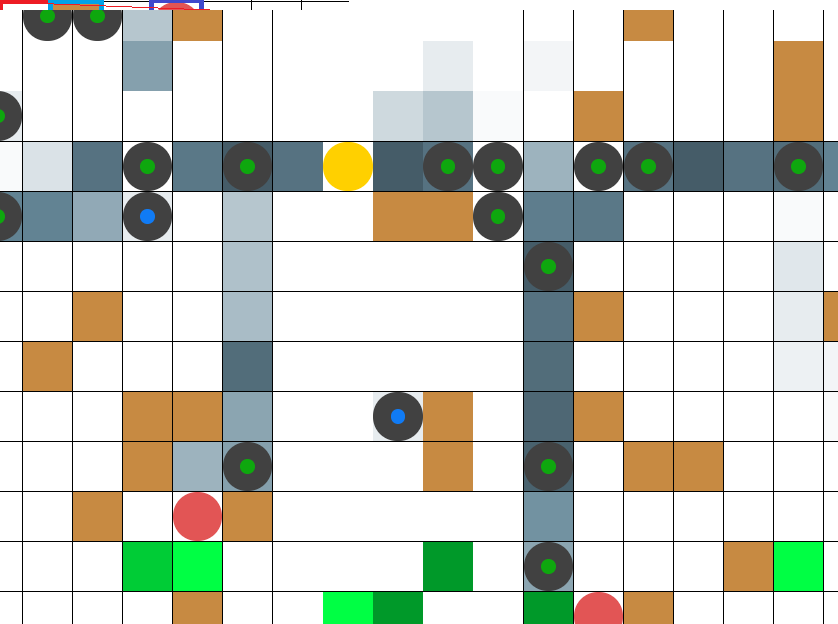

Angular | TensorFlow | Artificial Intelligence | TypeScript | Simulation | A*
Welcome to the ant simulator software, you can browse through the different pages in this sidebar to read more about the project!
An individual ant is not a very intelligent creature, however, ants have a wide range of responses to stimuli that often comes from chemicals created inside the ants' body, which is how they communicate. Observing a group of ants might make it look like a group of intelligent creatures, or even a single entity (often referred to as hivemind). Could it be possible to simplify and simulate this hive intelligence and group behavior?
Find a video of ants and name at least 5 behavioral traits. Here's one to get you started! Ants walk in a
straight line. Ants often walk in columns/lines, which has to do with them following scent (communication by
pheromones).
Even though our simulation is far too simple to be able to mimick the exact reasons why, we can reward the ants
for walking in a column. Our solution: Traversing a cell another ant walked recently provides a pathfinding
advantage, making the pathfinding cost analysis for the ant cheaper. This results in the ants having a
preference for walking behind other ants.

Ants have different roles. Ants fulfill different types of roles in real ant colonies.
Although in an actual ant colony the role will vary based on a number of factors, we made it so that an ant is
created as a specific type.
Up next: Cells and the game grid.